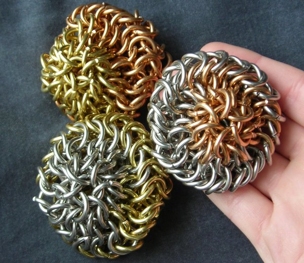

Juggling Balls:
I've made a few sets. I don't have a picture of my first or second ones, since they pretty much sucked.
The third set (top picture) was the first that I really liked. These were the ones I used when learning how to juggle (yes of course I can juggle...not very well though). Which is all very well, but I'll recommend that future amateurs wear steel-toed shoes for the duration of the learning process.
The nice thing about these ones is that they aren't stuffed with anything. Oh, and they also can double as miniature UFO models. That's right, now you know you want them. You can be juggling with your very own alien fleet.
The next set (made out of byzantine spheres in three different metals) has been planned, completed, and sold, all without my ever taking a picture. :(
Fifth set: The above juggling balls are now available in three colors!
The third set (top picture) was the first that I really liked. These were the ones I used when learning how to juggle (yes of course I can juggle...not very well though). Which is all very well, but I'll recommend that future amateurs wear steel-toed shoes for the duration of the learning process.
The nice thing about these ones is that they aren't stuffed with anything. Oh, and they also can double as miniature UFO models. That's right, now you know you want them. You can be juggling with your very own alien fleet.
The next set (made out of byzantine spheres in three different metals) has been planned, completed, and sold, all without my ever taking a picture. :(
Fifth set: The above juggling balls are now available in three colors!
Rings:
14 ga 3/8" ID
Stainless Steel, Bronze, and Brass
Expanding circle 4:1
Stainless Steel, Bronze, and Brass
Expanding circle 4:1